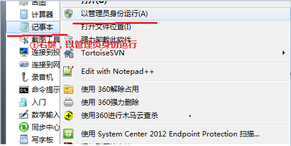
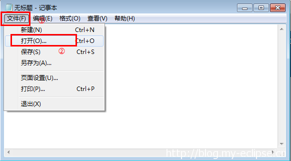

2014-07-25-25 144242 views
近期，相信大家都发现了，国内Google访问狠不给力，基本上打不开，谷歌在相关的服务器也被搬到了美国，这不禁让人感慨,谷歌难道要全面退出中国的节奏？
作为一名“IT界”的淫才，百度往往会让你使用的特别“蛋疼”，针对于专业领域的搜索结果更是鸡肋，针对性不强，垃圾信息多，不精准等会让你浪费很多时间。相对而言，谷歌的搜索结果显示更为客观，尤其在搜索技术性文章的时候，结果更加精准。百度的搜索则更加侧重于中国网民的搜索习惯，搜索结果更加大众化。这就是为什么技术人员更喜欢用谷歌，而百度更符合大众口味的区别。
不能访问谷歌着实让人捉急，今天和大家分享如何通过修改Host文件来打到访问Google、Youtube等国外网站的目的。
优质付费SS推荐 https://www.deepss.me -> 官网
优质付费SS推荐 https://www.youss.me -> 官网
2016-10-20更新：SSX-科学上网利器-Shadowsocks 使用教程->点我查看科学上网教程
2017-2-14更新：DeepSS巨惠计划（年付优惠两个月活动进行中！），日本、香港、新加坡、美国KT，轻松上Google、看Youtube 4k视频->点我查看DeepSS计划
一、XP用户
XP的在C盘 C:WINDOWS/system32/drivers/etc 目录下的 hosts文件，我们用记事本打开后 修改里面的内容，添加本文下方附件的内容到host文件中保存即可。
二、Win7、Win8等系统用户
Win7及以后的系统涉及到管理员权限问题，需要用管理员身份运行记事本，再打开Host文件，进行修改，具体步骤如下：


打开Host文件后，添加本文下方附件的内容到host文件中即可，记得保存。
其他用户的host文件位置：
Android用户：首先必须root手机，然后安装root explorer管理器，打开进入/system/etc目录,长按host文件，弹出菜单拉到下面会看到“文本编辑器方式打开”。编辑输入即可
Mac OS用户： host位置为：/private/etc/hosts
iPhone用户：需越狱，使用 iFunBox、PP助手、同步助手、iFile 等访问设备文件系统，备份并修改该文件后覆盖：/etc/hosts
Linux系统hosts位于 /etc/hosts
2017-02-14上午更新 最新Google Hosts文件
下载地址：https://blog.my-eclipse.cn/hosts.txt
2017-02-14更新 推荐最优雅稳定的“科学上网”方式
优质付费SS推荐 https://www.deepss.me -> 官网
优质付费SS推荐 https://www.youss.me -> 官网
2016-10-21更新：SSX-科学上网利器-Shadowsocks 使用教程->点我查看科学上网教程
2017-2-14更新：DeepSS巨惠计划（年付优惠两个月活动进行中！），日本、香港、新加坡、美国KT，轻松上Google、看Youtube 4k视频->点我查看DeepSS计划
2017最新Google Host附件下载
关注下方微信公众号（微信号：yomobang），回复 host ，查看最新实时下载地址
2017-2-14更新：DeepSS巨惠计划（年付优惠两个月活动进行中！），日本、香港、新加坡、美国KT，轻松上Google、看Youtube 4k视频->点我查看DeepSS计划
版权属于：Eclipse部落 - MyEclipse中文网
原文地址：https://blog.my-eclipse.cn/host-google.html
转载时必须以链接形式注明原始出处及本声明。
厉害.!!!操作完了.真的可以上去谷歌了.而且速度很快的.
有什么用
有什么用
为什么我的不能访问呢
直接访问google的IP可以访问
请教mac用户修改方法 谢谢!
/private/etc/下面的hosts文件
怎么修改啊
我的为啥还是进不去呢 :-
最新，12月至2016年，速度，每日更新：http://dwz.cn/2fYDCu
真是从技术层面解决问题，终于能上了。
怎么我不见附件
hosts
不能访问啊
真心不错
谷歌能用 谷歌学术用不了啊
安卓用户需要另外编辑Host文件，请站长注意！
安卓用的话要去掉句尾的小空格！！！
真是技术性的补刀，get。
现在安卓的还能用吗？
请问句尾的小空格是啥呀？！我就差这一步啦，大神赐教
请问句尾的小空格是啥呀？！我就差这一步啦，大神赐教
thx
简直不能再赞 google果然好用啊
缺了会死不？
支持一下
相当给力啊！
楼主，前两天到现在，都上不去了，移动的网络，求更新啊
恩，我也发现了，近期将更新
已更新~
哈哈，谢谢，已经可上~没有Google日子不好过啊
看来Google走势还没有下滑呢
小白想求问，是把附件中的内容复制到hosts末尾还是覆盖原hosts内容。修改这个会不会有什么风险…
复制到末尾比较安全，注意，里面内容的每一行前面带#的说明被注释了。一般默认里面都被注释掉了，也就是说啥也没有，全部覆盖也可以。如果里面有没有注释的内容，建议，复制到末尾
抱着试试的态度，尝试了。尼玛博主这篇文章你说我推荐出去呢还是推荐出去呢，赞
这算是翻墙了吗？
Pingback: 修改Host文件让你的Google跑起来(2014-9-2更新)_NNBBXX's blog
不错哦，可用，欢迎添加友链，http://dedewp.com 陌小雨博客
linux也能用这种方法修改吗
扯到技术层面的，楼主慌慌嗒。
你好 博主 我可以访问youtube 但不能看youtube上的视频啊
加一，同求解
直接访问成功后，国内的网站访问起来慢了，公司的内网也收到了影响
真牛比！
真实牛逼！
群满了 还有别的群吗
Pingback: Gregory Smith
您好，我的博客：逍遥乐IT博客http://www.luoxiao123.cn 由于新的域名备案！同一主体下的逍遥乐IT博客和视频网站也将受到影响，近期仅允许搜索引擎访问，收录不受影响！所以贵站可能检查不到本站友链！您可以继续保留本站友链，备案将在1-2周结束
为什么我的就不能访问，以前的32位WIN7可以访问，现在换位64位的了，就不能访问了？神马情况？
没错，要找点技术内容，百度实在太让人蛋疼了
这个方法必须上交给国家。。。
特意登录感谢你，真是十分重要的资料，感谢作者的奉献
为什么我的进不去 为什么为什么为什么为什么为什么 我的事win系统 64位操作系统，，，因为一直进不了GOOGLE下不了sdk 这几天一直属于更年期提前的状态，，跪求大神帮忙，，，，
不可以呀
今天下午突然打不开了呢，求救呀
感谢博主，现在用chorme可以访问了，用IE还打不开，还算可以吧
今天已经可以了，感谢作者
请问楼主如果使用SVN下载GoogleCode的代码，要如何处理呢
已经可以用了，感谢楼主！
今天谷歌学术又上不去了~~~
已更新
谢谢！
太好了，昨天就打不开了，今天赶紧来博主这里看看，已经更新了。太赞了
真的吗？
万分感谢
1116号的版本，将ip末尾80改成81或者82、83就可以顺利访问了
现在不能访问了
楼主，谷歌网站可以访问了，网页翻译翻译不了
今天又无法访问，楼主救命呀
又可以了,看来是不稳定呀
附件内容在哪
又打不开了,楼主求救呀
已更新
谢谢博主，真是用心呀
12月5日上不去呀，不好用，希望期待 更新 ，不能用hk的，
真诚期待，香港的网址不能用
已更新
还是上不去呀，请好心负责的 指点，就是提示香港 地址不可用
不是博主的错，是国内被封了，作者找到的地址被人发现就被封了。哈哈
不错不错
12月6日的进http://www.google.com的时候总是提示证书错误，不知道怎么解决
相当给力
win8.1 Host文件不能保存
改权限，修改好了就能保存
有国内的朋友告诉我，地址 hk 的上不去，请照顾下，国内的完整版，谢了
进谷歌说是非私密连接，不让连啊
好像又被封了
已更新
博主好人，真是及时。谢谢了
最新版上不了google
已更新
什么时间更新呢，又不行了
已更新
亲，我这里有个独立ip主机5折，每天限额的活动，诚招广告位
我想问一下楼主,这些解析网址从哪里得来的，我也是学习网络方面的
楼主霸气，好有爱
赞一个，楼主好人！
我的怎么不好用啊
17号的没效果，麻烦再更新一下
http://www.awolau.com/hosts/google-hosts.html
最给力的顶！
楼主给力啊 谢楼主
感谢，非常感谢！
手机还是上不去
请问博主，XP系统的电脑修改后，可以成功使用.但另一台WIN7系统的电脑按照步骤修改后(有以管理员权限打开记事本）却还是不行。
又不行了，几天都不能用，快点想想法办法吧，楼主，谢谢
又上不去了！
youtubu 打不开呀 XP系统下
博主真是神速呀。感谢感谢
楼主请问，google 专利如何修改host访问呢！
感谢你，太好了。youtube现在太重要了
好像又不能够登陆谷歌了。。。
好像又不行啦。
又可以了
强人， 好用了。 谢谢博主
http://www.awolau.com/hosts/google-hosts.html
用了不说声谢谢不厚道
还是不行，伟大的家园。
现在又不可以访问了，是怎么回事？能ping通谷歌服务器，但就是打不开谷歌
是呀，又不行了，国内真是让人无语呀
又上不去了
能上邮箱，但是下载不了附件，好多图标看不见了
博主好人，，记得很早以的那个版本可以看youtube，现在都看不了，有时间是否可以研究一下~~~~
googel+刷不出来图片啊。。
博主好人，快快更新，现在又上不去了！
https://www.google.com/maps/可以，但是https://www.google.com/maps/d/ 就打不开
http://www.awolau.com/hosts/google-hosts.html
楼主好心救命…手机网页是可以看了,但是手机帐户不给登入,我联络人什么的都放在google帐户内了,求解求救命…
什么时间更新呢，又不行了
亲，现在有不能用了，求更新啊
http://www.awolau.com/hosts/google-hosts.html
1.5号也的不行了
我地球是可以上的，就是搜索不了和建筑就几个是3D的这个怎么回事
我地球是可以上的，就是搜索不了和建筑就几个是3D的这个怎么回事
感谢
又不行了，在国内真的太难了
不行了我X
http://www.awolau.com/hosts/google-hosts.html
辛苦了！
你只复制了1.5号那次更新的？
这个我第一次更新，最需要复制最后一次更新的内容就行了是吧？还有github里面是什么？
http://www.awolau.com/hosts/google-hosts.html
好像不行啊，怎么回事啊
http://www.awolau.com/hosts/google-hosts.html
没有更新了，终于败在××d手下，可怜的网民。
http://www.awolau.com/hosts/google-hosts.html
非常感谢博主辛勤的劳动，不懈的奋争！
手机没用？
手机地址一样吗？一直提示无法连接到网络是怎么回事？
google 翻译上不去呀求解！
不能翻译啦？？？求解
怎么我没有看到附件啊？
Pingback: Vanessa Smith
android上试试这个吧：hosts helper
..2212
为什么 链接 失效了？
大赞啊！！！！
应用商店图片不显示
无法登陆账号，只能用搜索。。可是我的很多收藏夹都在。。唉 无语ing
非常好，楼主辛苦
博主辛苦，不过19号更新的又不好用了，翻译不了了！还得麻烦博主替我们想办法啊，万分感谢
辛苦了，又需要更新了
这段时间被墙的速度好快啊，没两天就不能用
=-=貌似只能上google不能登录
金山提示系统异常，怎么破？
添加本文下方附件的内容到host文件中即可,到 底添加什么内容？？？
底添加什么内容？？？
最好一步是添加什么内容
有没有人跟我一样，改过之后网站什么的是可以打开，但是Youtube上的视频基本都播放不了。
找不到附件
看不懂 添加本文下方附件的内容到host文件中 这句话什么意思，求指教。
下载看看
下载个VPN吧，我试过好多VPN了，现在这个还行， http://www.qjvpn.com.cn?rec=387935 里边有四个免费的服务器，其他的收费，只要每天登陆签到一次就可以继续使用二十四小时，每天有1G的流量可以用，用GOOGLE查资料、看些图文类的网页足够了，并且我觉得免费的打开速度还可以。但是看太多视频流量不够就只能充值了。
本文下方附件的内容 在哪？
真心赞一个
好像被墙了，又上不去了。
怎么没看到文本信息嘞？
您的连接不是私密连接 一改完 打开youtube 或者google 都出现
持续更新地址打不开了，挂了逃跑软件也不行，个案？
打不开，全是证书错误然后404
好人哪，太牛B了，推倒反人类的多米诺墙。
大神！爱死你了!
附件呢
设置hosts，记IP什么的太麻烦了，记住这个baigeso。com，以后上谷歌不用愁了!
123
赞赞赞
附件在哪里？
http://www.awolau.com/hosts/google-hosts.html
附件呢？
没看见附件啊，（づ￣3￣）づ╭～
都不行诶
牛人~~崇拜~~
超级好用，太感谢了
说好的附件呢
ffffffddddj
附件在哪
福建在哪
附件在哪里！
大赞！
附件其实是个链接：2015 Google hosts持续更新地址
访问不了啊
感谢楼主，比goagent方便太多
咋看不到附件
利器是不是也阵亡了，博主？
附件
附件
真是高手，我之前搜了好多方法都很麻烦，现在已经能顺利上谷歌了，感谢博主
附件在哪里啊
感谢呀！又方便又快捷，儿子一定要看Google Earth’s 街景，总算是解决了。
感谢呀！又方便又快捷，儿子一定要看Google Earth’s 街景，总算是解决了。
111111111111111
还是你的管用。
楼主好人
断断续续，有时能上，有时不能上。Youtube能打开网页，但看不了视频。已验证
附件在哪？
您好，我的系统是win10预览版，google能翻墙吗
可以
谢谢
楼主你好，改了能登陆coc里的谷歌play账户吗？
楼主真是好人呐！
..
真相大白飞洒
终于能上了，真心不错，速度很快，祝越办越好
ありがとうございます
打开Host文件后，添加本文下方附件的内容到host文件中即可，记得保存。附件在哪呢？
博主，能不能加个http://cse.google.com/ 谷歌自定义搜索的
为什么我的谷歌页面显示不全啊，以前还好好的，后来更新之后显示不全了，开亚马逊根本没图片，有些页面也打不开，是哪里出了问题啊，求大神解决啊
更新PAC从GFWList
大神，恕我无知，这个是需要Shadowsocks么
本文下方附件的内容是什么？
楼主大大，我的手机时国行的n9006，已经刷机，底层root，并且刷入了第三方的recovery，想要用google商店下载app，但是在手机设置里面添加了谷歌账户之后显示同步失败，新注册一个账号也是这么显示的。我自己用谷歌浏览器可以登录账号，就是不能在设置里同步账号信息，导致google 商店打不开，但是网页版的又能打开，哦多剋啊～～～～
为什么看不到附件呢？？
其实就在“2015 Google hosts持续更新地址”这个链接里面
什么都不说了！牛！
秘密通道不能访问谷歌学术？
频道额好的
好久没来了，过来踩踩
好赞啊
已经解决，谢谢博主了！！
怎么粘贴啊，是替换还是粘在尾部啊，而且复制哪一部分啊
在的山东省热特瑞退热贴
非常有效，谢谢博主，试了百度的的这么多方法，算这个最快最有效的了，大爱博主
是谁啊
win10用户。换了host这个文件之后访问其他网站也会变得很慢很慢很慢。不兼容吗？
Pingback: Cash Loans
Pingback: Payday Texas
111
我怎么没看到附件
我低调，我不给赞，只给谢谢！
imac显示“您不是hosts的所有者，因此没有权限写到该文件”。只能生成一个副本，但是生成的副本后该怎么操作呢？大神，求指教~
我也是跟你遇到同樣問題
我先是複製一個hosts到桌面，將附件貼上去之後
將桌面上的hosts移到原本他在的資料夾中，然後點取代
這樣就可以了//
秘密通道：https://g.lightss.org，已经背墙了！
附件在哪？
秘密通道已失效
楼主快救 秘密通道！！！
怎么上不了Facebook
Win7的记事本在哪里啊？
附件内容在哪？
怎么不更新了呀
请问附件在哪》？
1232123
救救我啊，谷歌上不了，没法活啦
弱弱的问一下 ，附件内容在哪里呀。
能打开但不能搜索怎么解决呢
文本下方的附件在哪里？
马丹 大牛逼了 可以上Google 和Youtube !!!!!
怎么弄啊
請問本文下方的附件在哪呢?
要添加的福建在哪里？
附件
主好人，真是及时。谢谢了
秘密通道 似乎不能进了，前段时间 还是可以的
我也没看到附件在哪？有找到HOSTS，XP系统的，但是楼主你的附件在哪里？
附件呢？
附件在哪里
你找到附加了吗？
还在管用，太给力了，谢谢！好人一生平安
host
我来留下脚印
看看
host
host
hosts最新版本
6666666666666666
咋改？求答案
我现在用。。。任意游加速器，。。这个上去了呀。QQ800052665
试试先
host
哇！楼主好厉害，真的可以用了
host
把host文件内容更新之后，可以上去google了，感谢楼主分享~
host
HOST
不会用啊
谢谢分享！真的上去了[good]！我找了好长时间！真心感谢啊！[嘻嘻][给力]
3Q,好用
就一次成功了为什么再打开就不行了
我也是这种情况，很郁闷，不知道为什么
host
怎么下啊？
hosts
host
host
host
host
host
没有用
不错~~~~~~
不知道现在还是否有用
666
今天晚上刚改的，用了一会就不能用了，不知道原因，求解
又不能用啦
[抱抱]要看火辣辣超模极品写真，就来→ http://meinv.pro
etc 里面没有host文件怎么办啊 ？
host
host
太感谢了！！赞赞赞！！
好样的
host
谢谢。试试。
看看能不嫩公用
谢谢，博主是伟人，真是厉害。
果然能用，赞赞赞
host
hosts
host
hosts
hosts
host
host
啊
流弊啊！！！试了N种方法终于能上了
host
host
host
win7用户，host文件也添加了 #Gmail开始的？保存了，但是www.google.cn还是上不去啊
我也是win7的，附件拷贝进去粘贴在原内容下面，也上不去啊
host
host
host
host
host
host
host
地址呢？
host
host
能下载吗
host
万分感谢
host
asd
host
host
host
host
host
host
host
hosts
host
host
host
host
host
gsdhgdf
host
host
host
博主好人
好很好
host
host
host
host
为什么我按操作来的，结果还是用不了啊
sddddd
附件在哪里啊没看到
百度： OURLINK安全通道 你就知道什么是OURLINK
好人啊 我试试
HOST
在记事本中打开时找不到hosts文件怎么办办？知道hosts文件在哪里，但是它就是没显示，文件夹选项也看过了已经改成显示隐藏文件了，可在记事本中还是没显示。。但在资源管理器中按照正常的路径可以打开hosts文件，真是蛋疼。。。各位大神求支招[泪]
host
为什么不能分享一个百度云链接呢？
我只能使用laod的hosts了
这个hosts不会再更新了
已用上，好人一生平安。
host
host
不能上了！！！楼主！！！求更新！！
我的今天也不能用了。有一个问题，换hosts的时候，用不用把原来的删掉
是啊，楼主帮忙啊，万分感谢！
求助
是啊，不能了
我刚刚试了试可以上，你再试试
http://blog.my-eclipse.cn/host-google.html
host
host
host
用谷歌浏览器浏览国内的网站太慢，如何提高国内的速度？？
host
host
好像又不能用了，求更新~
host
host
[嘻嘻]
多谢！可以用！谢谢老刀！！！！
12.23更新了，文件1M多。
host
host
host
host
host
为什么
132
host
太牛掰了，帮了我大忙了…必须顶！！！
16年1月9日版本，youtube视频播放不了
hosts无法播放视频的
host
看不了youtube 的视频
油管视频看不了，怎么破
谢谢楼主 ，真的 能用，能转吗？我想转到贴吧
安卓手机好像上不了？
真心谢谢楼主。能看见了2016版本了
哎呀妈 太谢谢楼主了 hiahiahia
host
上不了了啊 楼主大大
最新的host修改已经不能翻墙了
是把下载地址里的txt内容全部复制粘贴到hosts里面吗？我是小白，急求
2016 1 28 实测用不了了
facebook被掐了
嗯 ，fb 上不去。谷歌凑合能上， 很不容易了
不能更赞！26号发现上不去了，27号就更新了…楼主大法好！
youtube上不了了
楼主太强大 太强大 感激不尽！！！！！！！！！！！！！
很好用，谢谢楼主
很好用！谢谢~~
2016-2-1更新 最新Google Hosts文件 WIN10 64能上Google了，Android不知怎么弄，
天涯丨扯蛋，
安卓用的话要去掉句尾的小空格！！！怎么弄啊
facebook還是上不到
虽然还有点不稳定但是很棒 谢谢！
文件在那里
终于可以上了，谢谢楼主
hosts不好用，经常失效，用这个吧，不限流量，永久使用：5b5l.com/Proxy/
太牛逼了，阔别3年的谷歌地球照片又能看了!必须顶！
为什么我这里还是无法登陆！
还是上不了
要如何能用FACEBOOK呀。。
必须赞一个，太牛B了，以前用WEEBFREER好占空间，现在方便了，哈哈
2-29号的，确实可用，感谢楼主！
谢谢，可以上去了。
楼主大大，貌似又用不了了！！！
可以用 就是下午有会突然上不了
不错，就是响应比较慢，谢谢楼主
2-29的可以用哦
楼主大大，现在上不了了
今天上不了了
挂了！
求更新，用不了了
从昨天开始 到现在 上不了了哦
上不了google，也上不了《纽约时报》，但可以上脸书和推，是我校园网的问题吗？
我也是 我想上谷歌啊
不行了啊
上不了 求更新！！
牛逼啊楼主。楼主好人，非常谢谢。
太棒了。。。我试试看的，竟然真的上了！赞一个！！！
你现在能上么 ？
很棒，很有用。
今早（3月30号）更新了最新的hosts（2016-2-29下午更新）…发现google还是不行…求解…
好东西啊~
我也上不去
支持
host
4月5日的hosts能够上谷歌应用，但是打不开谷歌网页[汗]
4.5 hosts确实打不开google网页
18号了。。。YouTube也上不了
youtobe网页可以打开，视频播放不了，请问这咋整?
博主 好吊
host
flickr不能上 麻烦楼主处理一下
看看行不行
用不了 没用啊
不是很明白呢&………………………………………………
楼主，为什么微博进不去啊，谷歌可以进
楼主，求帮忙啊，这个只能打开谷歌应用，谷歌官网打不开啊
你好 博主 我可以访问youtube 但不能看youtube上的视频啊
太棒啦
20160429 谷歌host 用起来爽呀
用的什么网络？
host
可以用，多谢。
http://google.suanfazu.com/
host
上不去，和用联通上网卡有关吗？
推荐 谷歌加加 http://google.suanfazu.com/
谷歌搜索，谷歌加加，提供国内直接可用的谷歌网页、图片、视频和学术等谷歌搜索代理，集合了150+谷歌镜像站
推荐 谷歌加加 http://google.suanfazu.com/
谷歌搜索，谷歌加加，提供国内直接可用的谷歌网页、图片、视频和学术等谷歌搜索代理，集合了150+谷歌镜像站
大写的牛